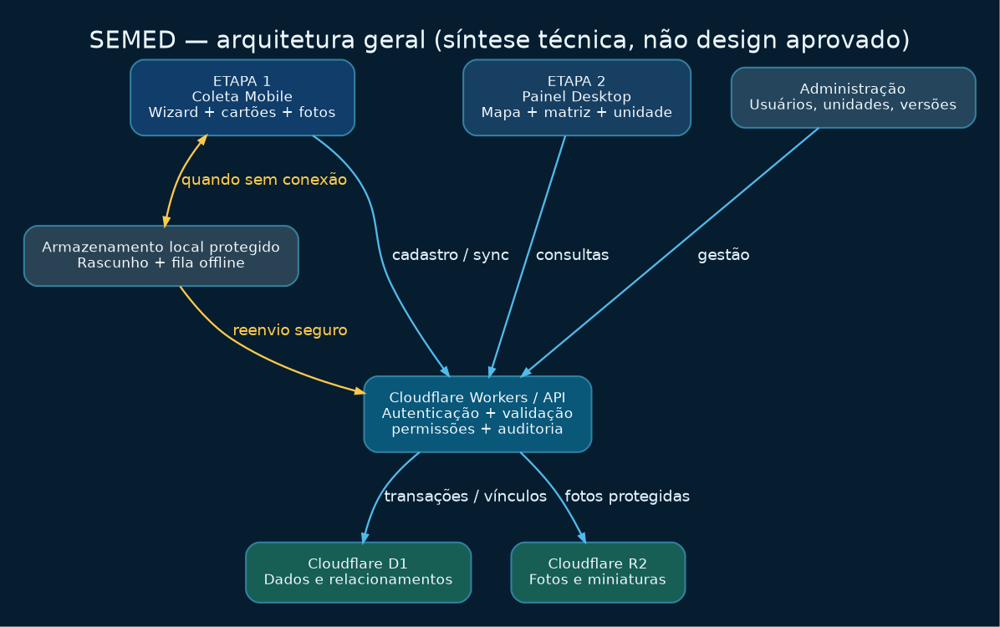
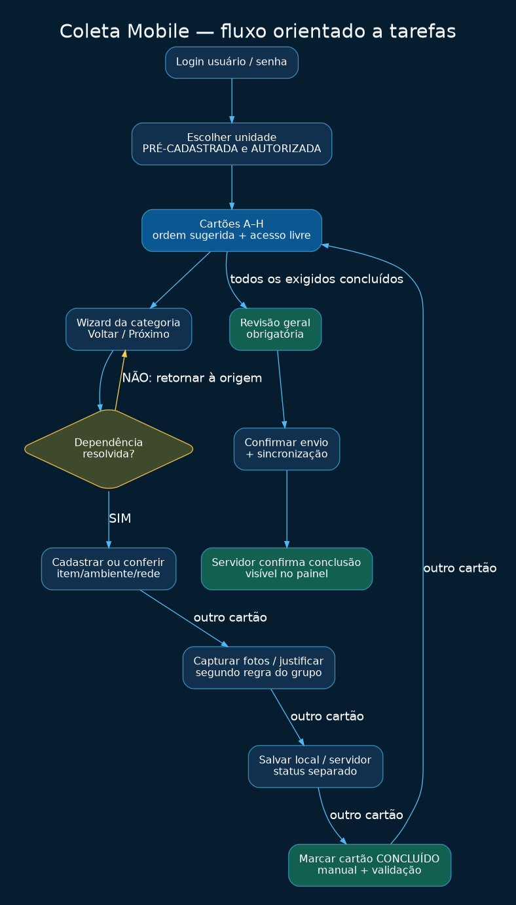
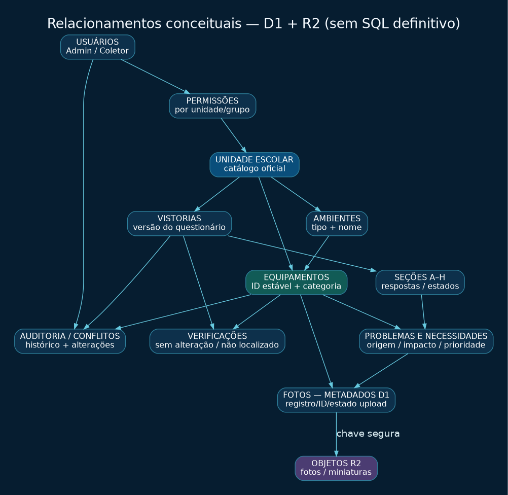
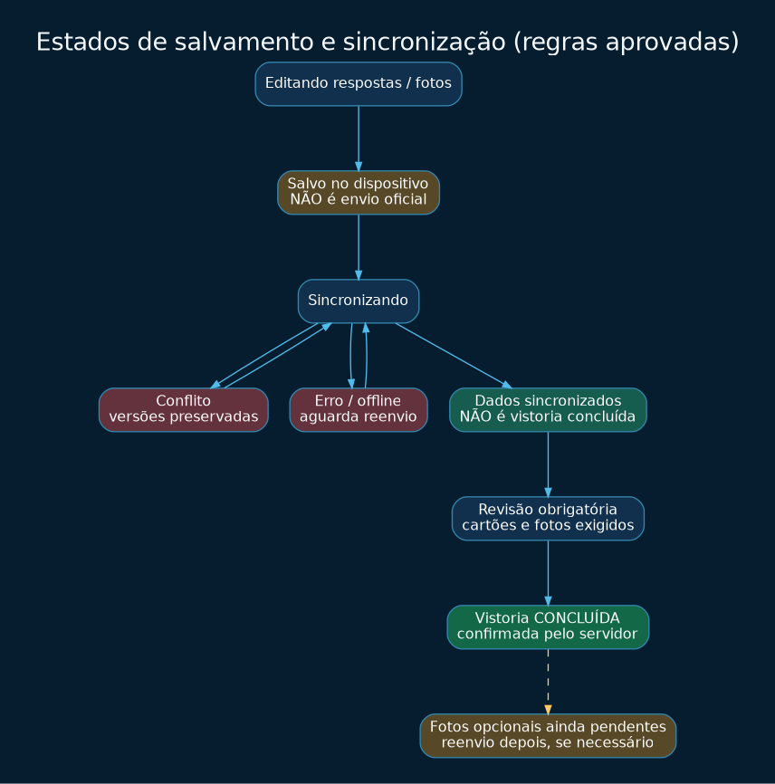
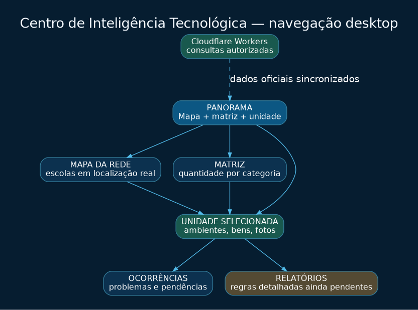

Coleta mobile — única referência visual aprovada
Coleta guiada dark-tech; não é painel gerencial
design/referencias/mobile/00_coleta_mobile_APROVADA.pngGaleria local de referências aprovadas e diagramas técnicos. Abra após extrair o ZIP.
Coleta guiada dark-tech; não é painel gerencial
design/referencias/mobile/00_coleta_mobile_APROVADA.png
Identidade do Centro de Inteligência Tecnológica
design/referencias/desktop/00_painel_geral_APROVADO.png
Setor especializado, mapa e filtros
design/referencias/desktop/01_mapa_da_rede_APROVADO.png
Comparação por unidade/categoria
design/referencias/desktop/02_matriz_equipamentos_APROVADA.png
Perfil e fotos
design/referencias/desktop/03_unidade_selecionada_APROVADA.png
Substituição dos boxes KPI genéricos
design/referencias/desktop/04_indicadores_integrados_ESTUDO_APROVADO.png
Diagrama técnico explicativo, não interface aprovada.

Diagrama técnico explicativo, não interface aprovada.

Diagrama técnico explicativo, não interface aprovada.

Diagrama técnico explicativo, não interface aprovada.

Diagrama técnico explicativo, não interface aprovada.
Documentação: 00_LEIA_ANTES_DE_TUDO.md · TXT original